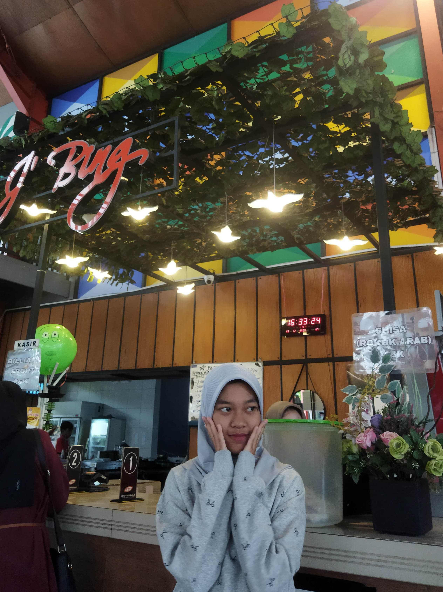

BERPIKIR KOMPUTASIONAL
Berpikir komputasional merupakan salah satu cara atau konsep untuk mengamati masalah, mencari dan mengembangkan solusi permasalahan tersebut dengan memanfaatkan teknologi komputer. Berpikir komputasional (Computational thinking) diperkenalkan pada tahun 2006 oleh Jeanette M. Wing, professor Computer Science di Carnegie Mellon University. Berpikir komputasional memang mengadaptasi pola berpikir atau cara kerja komputer. Bahkan sebagian orang beranggapan untuk bisa berpikir komputasional itu harus selalu menggunakan aplikasi komputer, padahal dalam kenyataannya berpikir komputasional tidak selalu harus menggunakan komputer. Berpikir komputasional dapat juga dimaknai sebagai proses berpikir atau keterampilan berpikir manusia dengan menggunakan pendekatan analitik dan algoritmik untuk merumuskan, menganalisis dan menyelesaikan masalah.
Website
Website adalah kumpulan halaman web yang saling terhubung dan seluruh file saling terkait. Web terdiri dari page atau halaman dan kumpulan halaman yang dinamakan homepage. Homepage berada pada posisi teratas dengan halaman-halaman terkait berada di bawahnya. Biasanya, setiap halaman di bawah homepage (child page) berisi hyperlink ke halaman lain dalam web (Gregorius, 2000).
Notepad++
Notepad++ adalah aplikasi teks editor yang memiliki fitur jauh lebih lengkap daripada Notepad. Aplikasi Notepad++ merupakan aplikasi yang disediakan oleh pihak ketiga yang dapat didownload dan digunakan secara gratis, yang dikembangkan oleh Sourceforge.net. Aplikasi ini tidak langsung ada ketika Anda menginstal Windows. Anda perlu mendownloadnya terlebih dahulu dari halaman resmi. Notepad++ mendukung para programmer untuk melakukan coding bahasa pemrograman. Notepad++ mendukung bahasa pemrograman seperti HTML, PHP, C, C++, Java, JavaScript, Perl, Pascal, CSS, dll.
Latihan Soal
1. Apa yang dimaksud dengan dekomposisi dalam berpikir komputasional?
2. Dalam study kampus perencanaan proyek taman sekolah, langkah pertama dalam proses dekomposisi adalah?
3. Contoh nyata dalam abstraksi dalam kehidupan sehari-hari adalah?
4. Apa tujuan dari algoritma dalam berpikir komputasional?
5. Algoritma yang baik harus memiliki?

Kesimpulan
Dengan berpikir komputasional sesorang akan mudah untuk mengamati masalah, mencari solusi dari suatu permasalahan, dan dapat mengembangkan solusi atau pemecahan masalah.
Selain itu berpikir komputasional mengasah diri kita untuk berpikir lebih efektif dan efisien yang terasa full senyum dan juga bahagia asekkk uhuyyyy
Kenal kita yukk!
13
21
22

24
© 2025. Najasansein. full senyum.